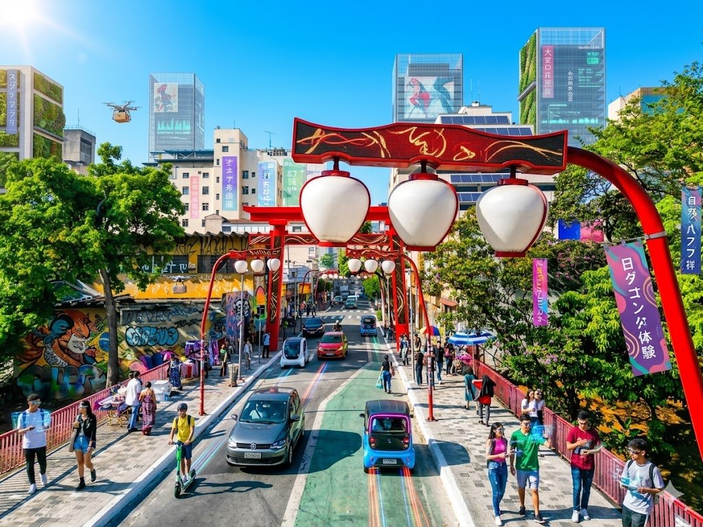
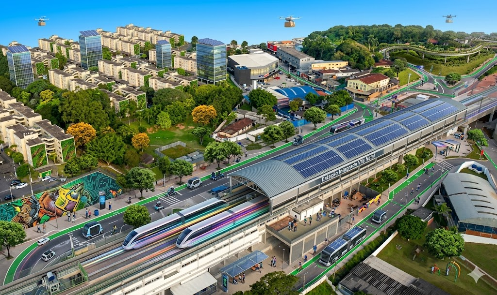

Liberdade
Como é hoje: Hoje a Liberdade mostra uma cultura muito forte focado no japão, com suas
comidas típicas, os seus costumes e produtos famosos pelo japão.
Como eu imagino em 2035: Como a cultura japonesa é muito forte na região da Liberdade,
eu acredito que isso não vai mudar, mas com avanço das tecnologias a liberdade pode se tornar a região
mais bonitas e futuristas de São Paulo, com inumeras pessoas querem conhecer a Liberdade do futuro

Ver no Google maps
Vila Natal
Como é hoje A região do Vila Natal ficou bem famosa por conta da estação "Mendes Vila
Natal", para os moradores do codomio do Palmares foi um prato cheio, facilitando tanto paras os
moradores quantos para as pessoas que trabalham naquela região
Como imagino em 2035:O futuro vai ser bem gradioso pra essa região, mas para melhorar
tem que resolver os problemas do próprio como: uma lotação muito grande no trem do Mendes dando muitas
dores de cabeça para os passageiros, algumas ruas sendo muito fechadas que podem causar trânsito ou
acidentes e por fim não só sendo na região do Vila Natal mas em todo Brasil, as questões de altos
indices de crimes. Resolvendo tais problemas a região do Vila Natal seria um lugar mais tranquilo para
se trabalhar ou visitar.

Ver no Google Maps